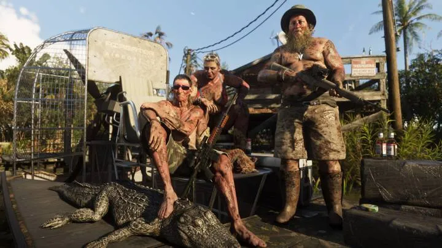
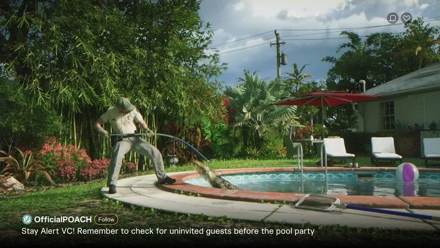
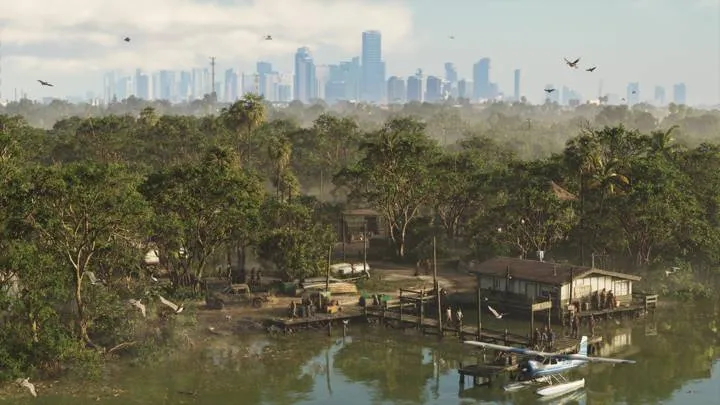
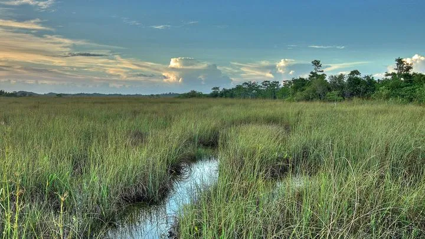

Аллигаторы в GTA 6
Обновлено:

Аллигатор — главное животное Леониды: в болотах Grassrivers, у охотников и даже в частном бассейне.
- Болота Grassrivers.
- Охотники с добычей.
- Аллигатор в бассейне.
Подробно
На официальном скриншоте Grassrivers охотники позируют с добытым аллигатором, на другом — болото, где ходят аэроглиссеры и летает вертолёт. В первом трейлере (0:42) — вирусный ролик об аллигаторе в бассейне частного дома.
По подсчёту GTABase, рядом на болотах замечены змеи, цапли, журавли, колпицы и утки.
Аллигаторы во Флориде
По оценке FWC, во Флориде около 1,3 миллиона аллигаторов — во всех 67 округах, а с 1987 года это официальная рептилия штата. Кормить их запрещено законом. В трейлере 1 GTA 6 аллигатор лежит у бассейна — реальная история 2019 года из Палм-Бич-Гарденс. Подробно — сравнение.
Частые вопросы
Где в GTA 6 аллигаторы?
В болотах Grassrivers и даже у бассейнов.
Главный зверь Флориды
Американский аллигатор — официальная рептилия Флориды с 1987 года и, пожалуй, главный герой её дикой природы. По оценке FWC, в штате живут около 1,3 миллиона аллигаторов — во всех 67 округах. Они живут в болотах, озёрах, реках, каналах для полива и прудах у полей для гольфа. В 1960-х вид был на грани исчезновения из-за охоты ради кожи, его взяли под охрану, и он восстановился так хорошо, что теперь во Флориде есть даже ограниченный охотничий сезон по лицензиям.
Аллигатор растёт всю жизнь: крупные самцы бывают длиной больше 4 метров. Весной, в брачный сезон, они особенно активны и чаще заходят во дворы и бассейны — отсюда истории, которые потом превращаются в вирусные ролики. Один из них Rockstar показала в первом трейлере: аллигатор у частного бассейна. В реальности похожий случай был 8 апреля 2019 года в Палм-Бич-Гарденс.
Аллигатор или крокодил
| Аллигатор | Крокодил |
|---|---|
| Широкая морда в форме U | Узкая морда в форме V |
| Нижних зубов не видно | Видны зубы нижней челюсти |
| Пресная вода | Солоноватая вода у побережья |
| ~1,3 млн во Флориде | Около 2000 на юге Флориды |
Флорида — единственное место в мире, где аллигаторы и крокодилы живут рядом, в Эверглейдс.
Что видно в GTA 6
- Аллигаторы в протоках Grassrivers — на официальных скриншотах.
- Охотники с добытым аллигатором — отсылка к реальной охоте по лицензиям.
- Аллигатор у бассейна — трейлер 1.
- В коллекционном наборе — фигурка аллигатора Макки, героя телешоу Леониды.
Безопасность и закон
Кормить аллигаторов во Флориде запрещено законом: прикормленные звери перестают бояться людей и становятся опасными. Если аллигатор заполз во двор, звонят на горячую линию FWC, и специальный ловец увозит животное.
Сравнение — «Аллигаторы Леониды и Флориды», регион — Grassrivers.
Кадры


Где посмотреть
Таймкоды — чтобы найти момент в официальном видео Rockstar.
| Где | Что в кадре |
|---|---|
| Официальный скриншот Grassrivers | Болото Grassrivers |
| Официальный скриншот Grassrivers | Охотники с добытым аллигатором |
| Трейлер 1, 0:42 | Аллигатор в бассейне |
Аллигаторы и реальность

 vs
vs

vsНа этой странице также: Добыча охотников (Животные).
Кадры и названия: Rockstar Games — трейлеры GTA VI, «Расширенный показ» (An Extended Look), официальные скриншоты. После релиза 19 ноября 2026 года дополним страницу данными из игры.
Каждый день — одно сравнение: кадр игры рядом с реальным фото. Подписывайтесь:
YouTubeInstagramTikTok